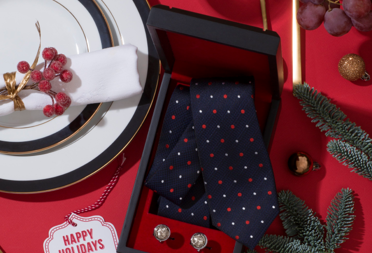

<section class="case-next">
	<div class="container">
		<div class="case-next__wrapper">
			<div class="case-next__preview">
				
			</div>
			<a href="#" class="case-next__name">
				<div class="case-next__button">
					<div class="case-next__next">Следеющий проект<svg width="48" height="10" viewBox="0 0 48 10" fill="none" xmlns="http://www.w3.org/2000/svg">
						<line x1="0.75" y1="8.75" x2="47.25" y2="8.75" stroke="#313131" stroke-width="1.5" stroke-linecap="round"/>
						<line x1="39.0588" y1="1.43772" x2="46.9377" y2="8.44117" stroke="#313131" stroke-width="1.5" stroke-linecap="round"/>
						</svg>
					</div>
					<div class="case-next__title">
						Разработка фотоконтента<br>для Damat-Tween 
					</div>
				</div>
			</a>
		</div>
	</div>
</section>